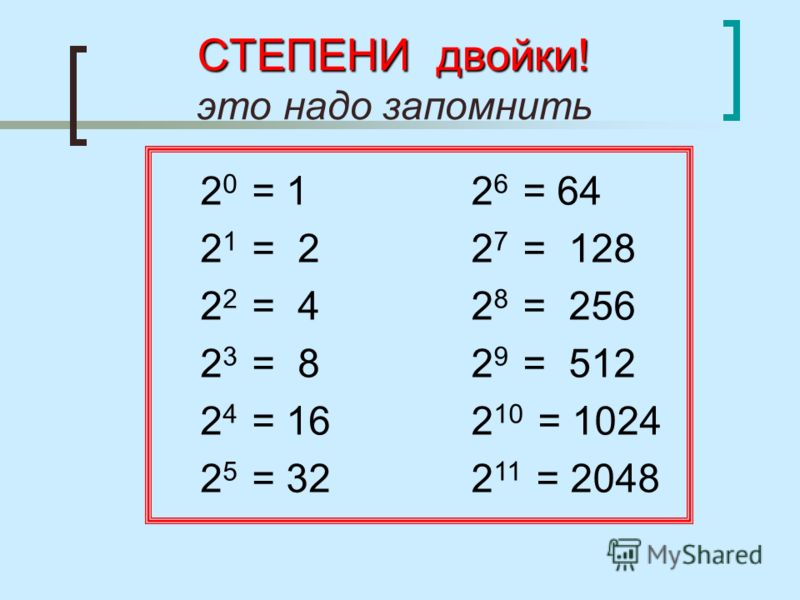

Из истории. Это интересно. Оказывается, древние греки умели возводить в квадрат и в куб. Названия для второй и третьей степени числа древнегреческого происхождения: «дюнамис» — квадрат, «кюбос» — куб.
Древний Вавилон. Вавилоняне пошли дальше: составили и пользовались таблицами квадратов и кубов чисел, которыми мы пользуемся в настоящее время.
Правила действий со степенями
1 Умножение степеней с одинаковыми основаниями аn*am= an+m
Чтобы перемножить степени с одинаковыми основаниями, надо основание степени оставить тем же, а показатели степеней сложить.
25*2-3 = 25+(-3) = 22=4; a 3,5*a-0,5 = a3,5-0,5 = a3
2. Деление степеней с одинаковыми основаниями аn:am= a n-m
Чтобы разделить степени с одинаковыми основаниями, надо основание степени оставить тем же, а показатели степеней вычесть.
53:52 = 53-2 =5; х6:х-2=х6-(-2)=х8

3.Возведение степени в степень
(an)m = anm
Чтобы возвести степень в степень, надо показатели степеней перемножить.
(76)1/2 = 73 =147
4. Возведение произведения в степень
(ab)n = an*bn
Чтобы возвести произведение в степень, достаточно возвести в степень каждый множитель.
(16*3)2 =162*32 =28*32
5.Возведение дроби в степень
Чтобы возвести дробь в степень, достаточно возвести в степень числитель и знаменатель.